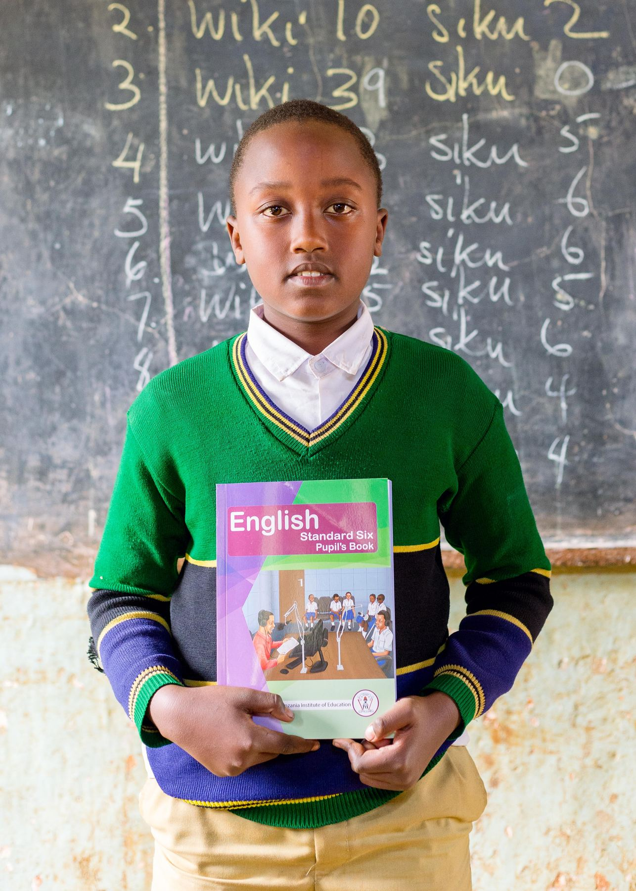
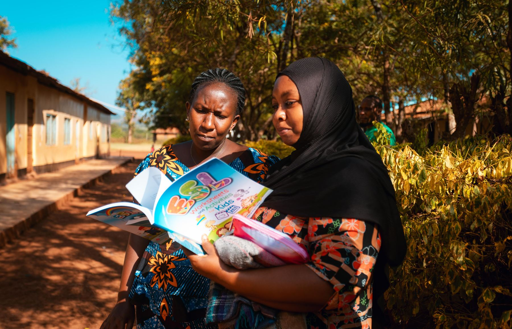

Habari Foundation is a nonprofit organization based in Tanzania. This program intends to support education to children from poor families. We intended to work with communities in order to find out the long term solution of child vulnerability in Tanzania. In working together with communities and other interested parties on children’s matters the long term goal is to create the highest level of academic achievements.
Is to work together to build the highest level of academic achievement, a respectful and nurturing environment focused on enabling them to reach and expand their potential, and also to prepare them to become productive, responsible, ethical, creative and compassionate members of society.
We treat sponsorship funds and children’s stories with honesty and care.
Every child should know their future can be different from the poverty they were born into.
Education, health and basic needs delivered with dignity in the community.
Families, leaders, donors and children share the work of lasting change.
Sponsors and children build a one-to-one relationship through letters and visits.
A faith-based charity walking with children in Moshi, Kilimanjaro.

This program aims to get a clear picture of the needs of orphans and children from poor families, and the extent and cause of problems they face while they are in school. Since circumstances change over time, this is an on-going effort. The outcome is to keep different actors informed on the real-life situation of children living in vulnerability in Tanzania.
The project works with children’s parents, relatives, donors, community leaders and religious leaders to address why children lack basic needs. Children’s rights to protection and development are considered throughout reintegration — including follow-up for one year after a child has been reintegrated.
Sponsor a childWrite to Director Stan Wilfred — habarifoundation@gmail.com or +255 754 044 692.